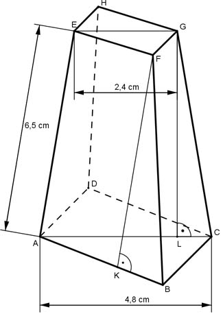
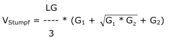

Aufgabe 264 Wie groß sind das Volumen V und die Oberfläche O des dargestellten quadratischen Pyramidenstumpfes?  Satz von Pythagoras im Dreieck ABC: AB = BC AC² = AB² + BC² = 2 * AB² |:2 AC² 4,8² cm² AB² = ------ = ----------- = 11,52 cm² |√ 2 2 AB = 3,4 cm Satz von Pythagoras im Dreieck EFG: EF = FG EG² = EF² + FG² = 2 * EF² |:2 EG² 2,4² cm² EF² = ------ = ----------- = 2,88 cm² |√ 2 2 EF = 1,7 cm Satz von Pythagoras im Dreieck LBG: AE = CG AC - EG 4,8 cm - 2,4 cm LC = ----------- = ------------------- = 1,2 cm 2 2 CG² = LC² + LG² |- LC² LG² = CG² - LC² = 6,5² - 1,2² cm² = 40,81² |√ LG = 6,39 cm  6,39 V = ------ * (3,4² + 3,4 * 1,7 + 1,7²) cm³ 3 6,39 V = ------ * (11,56 + 5,78 + 2,89) cm³ = 43,1 cm³ 3 Satz von Pythagoras im Dreieck KBF: AB - EF 3,4 cm - 1,7 cm KB = --------- = ----------------- = 0,85 cm 2 2 BF² = KF² + KB² |-KB² KF² = BF² - KB² = 6,5² - 0,85² cm² = 41,53² |√ KF = 6,44 cm AB + EF O = 4 * --------- * KF + AB² + EF² 2 3,4 cm + 1,7 cm O = 3,4² cm² + 1,7² cm² + 4 * ----------------- * 6,44 cm 2 O = 80,1 cm²